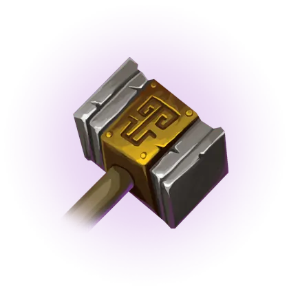
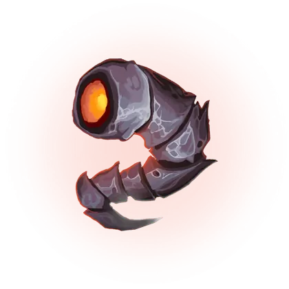
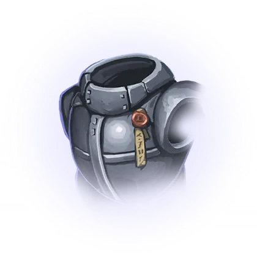
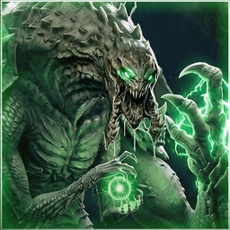
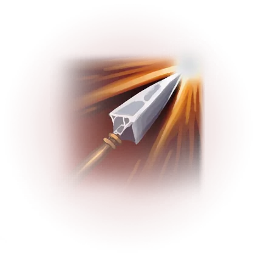
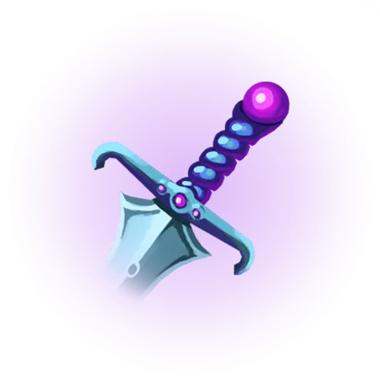
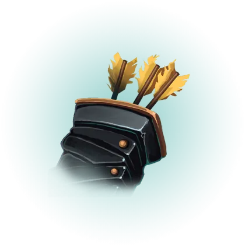
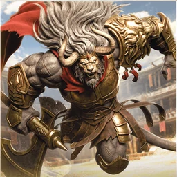

Released 2026-11-03 · Scout overview, predictions ·
official notes ↗
Heads up: these are predictions, not measured results. Every forecast is grounded in the patch's stated numbers and in where each hero stood before 1.18. Measured win rates replace the
forecasts once enough post-patch ranked games land in the feed.
TL;DR — what actually changes how the game plays
A new frontliner, and two items built for him
Kaelen spins, dashes and drops from the sky, and every ability lays Rimeglass that slows and burns enemies standing in it. The same patch adds Forticus and Vortex Stone, both shield-on-fight items the notes name for frontliners like Kaelen, Steel and Riktor.
Free gold and free haste get trimmed
Aion's Major, Philosopher and Arcane Resonance all lose value, Construct drops from 1 to 0.75 ability haste per level, and Timewarp's mana regen falls from 150% to 125%. The notes say they want early leads to mean something again.
Krix stops being the default bruiser Eternal
Max health 5% -> 4% and Predator's damage, speed and duration all shrink. The notes say jungle bruisers were skipping every other Eternal for it.
Valmont loses the walk-at-you ultimate
Exsanguinate's damage drops to 40/62/84 and its hero healing to 16/34/52, with lower scaling on both. Rupture gains a point of magical scaling in return.
Support and jungle under-performers get pulled up
Maco gets more healing and shield scaling and a shorter stun, Kallari's dagger hits harder and slows more, Serath gains physical power growth and Chastise damage, and Kira's passive raven now does flat damage.
The ladder resets with a new top
Split 5 ends on release. Placements restart for everyone, Master arrives between Diamond and Paragon with no VP cap, and Paragon becomes a live Top 100 that refreshes daily.
Meta read1.18 adds Kaelen, a frontliner with no data yet, plus two frontline items, Forticus and Vortex Stone, and trims the Eternals that handed out free gold, haste and health. Valmont is cut for a second straight patch, Maco, Kallari, Kira, Serath and Legion get help, and Steel's level 1, Muriel's tank builds, Morigesh and Iggy's offlane come down. The ranked split also resets, so expect a noisy first week.
Ranked comps: what shifts
Expect ranked drafts to lean toward real frontlines: Kaelen, Forticus and Vortex Stone arrive while Eternals that hand out free gold, haste and health shrink. These are reads from the notes, not measured results.
Frontline engage gets new tools
Vortex Stone refunds 20% of basic cooldowns when you immobilize a hero, suiting engage supports like Riktor (50.0% over 47,720 ranked support games), and Forticus shields fighters mid-fight. Expect one hard engage plus a fighter in the middle to gain.
Haste-and-gold mage comps lose their cushion
Aion's gold, Construct, Phylactery and Timewarp's mana regen all come down, so expect farming mids paired with a Timewarp support to scale slower. Mages may need to buy more haste.
Jungle bruisers re-open the Eternal question
Krix, which ran in 15,513 jungle games at 51.4% in 1.17.2, loses health and Predator strength. Expect bruiser junglers such as Aurora and Rampage to stay in the pool, some moving to another Eternal.
Maco and Muriel lean into magical power
Maco gains healing and shield scaling and Muriel's tank build loses shielding, so both push supports toward magical power. Expect full-tank Muriel to lose ground; build her with magical power, where she should stay strong.
Duo lane carries reshuffle
Legion gets an earlier spike, Kira gets flat raven damage, and Skylar trades beam damage for anti-tank tools, while Solaris loses haste. Expect lane bullies to punish the weaker level-1 Steel; frontliners into fast attackers can lean on Hexbound Bracers.
Razorstorm (primary): spins for 3.5s, hitting every 0.25s in 400u for 7.5-17.5 (+8-16% total physical power) (+0.5-1.8% max health), laying Rimeglass. Cannot be interrupted by hard crowd control. 60% against minions. Passively +4-12% armors, x1.5 on Rimeglass. 13-8s cooldown.
Winter's Pursuit (secondary): 1100u dash that stops past the first hero, 70-170 (+100% bonus physical power) and a 25% slow for 1.2s; against a Frostbitten target damage doubles and heroes are rooted for 1.2s instead. 16-14s cooldown.
Rimefang (alternate): 0.6s channel, then a spirit flies 2250u through terrain dealing 11-15% of the target's max health, a 0.2s stun and a 50% slow for 1.5s, trailing Rimeglass. 15-13s cooldown.
Frostfall (ultimate): 1.5s channel, then 4s in the sky at 1275 movement speed, over walls and immune to damage; lands for 200/300/400 (+100% bonus physical power) (+6% bonus health), a 40% slow, a 1.5s root in the center, and an 8s Frost Storm that keeps applying Frostbite at double damage. 130/110/90s cooldown.
Augments: Relentless Hunt (Razorstorm hits once more per 20% attack speed, up to +10, and can crit; Rimeglass no longer grants armor), Neverending Chase (hits on heroes and camp leaders cut Winter's Pursuit cooldown 3%), Last Winter (allies in the landing zone get +20% movement speed; Kaelen gets a 10% max health +4% per hero hit shield).
WhyEvery ability lays Rimeglass, whose Frostbite slows 15% and deals 0.5% max health true damage every 0.5s. Winter's Pursuit roots Frostbitten targets for 1.2s; Frostfall's landing roots the center for 1.5s.
What it'll changeExpect him in many early drafts while players learn him. We hold no data on him, so this is a kit-only read, including the offlane role; the notes call him a frontliner and name Forticus for him. Against him, stay off Rimeglass: Frostbite lingers 1s after you leave it, and Winter's Pursuit roots Frostbitten targets.
Predicted buildsGuess, no games yet
Offlane frontlinerofflane

Overlord→

Rapture→

ForticusorAegis of Agawar

Eternal: Krix or ThraexAugment: Neverending Chase
Razorstorm scales with max health and gives bonus armor while he stands on Rimeglass, so health and armor feed both his damage and his staying power. Overlord, Rapture and Aegis of Agawar is Greystone's most-played offlane core (1,151 games at 60.9%), and the notes name Forticus for Kaelen. Neverending Chase brings Winter's Pursuit back sooner, so he roots more Frostbitten targets.
Jungle attack speedjungle

Sky Splitter→

Ashbringer→

Onixian Quiver

Eternal: ThraexAugment: Relentless Hunt
Relentless Hunt gives Razorstorm one more hit per 20% attack speed, up to 10 more, and lets it crit, but Rimeglass stops giving armor. This is Khaimera's most-played jungle core (1,548 games at 59.7%). It hits harder and is easier to kill. Thraex carried 13,110 Khaimera jungle games at 53.8%, and 1.18 weakens Krix.
Our guess from his kit and from what similar heroes built on 1.17.2. No Kaelen games counted yet, so this is not a recommendation; measured picks replace it once 1.18 ranked games come in.
Notable8 heroes
Macosupport⟳ ShiftNotable
Health regen 1.6 -> 1.3; attack speed 115 -> 125; BAT 1.3 -> 1.45
Maco Gift! health magical power scaling 35% -> 40%; healing allies now grants Maco the assist
WhyMaco Gift! healing scaling rises from 35% to 40% and Maco Fly!'s shield scaling from 50% to 60%, but its flat shield drops. Maco Sparkle!'s stun shortens to 1-1.2s.
What it'll changeExpect a modest climb for magical power healing and shield builds, while the shorter stun makes stun-into-ultimate less reliable. He sat at 47.0% over 11,534 ranked support games. The notes move his value into magical power.
Hypercharge bonus physical armor penetration 20% -> 25%; damage ramp per hit 1% -> 0.75%, max stacks 25 -> 30, max ramp 25% -> 22.5%
Plasma Barrage explosion missing health damage 6% -> 7.5%; Atomised Artillery time between shots 0.75s -> 0.65s and now +10 ultimate haste
WhyAir Assault's missiles soften and Hypercharge's ramp tops out lower, but its armor penetration rises from 20% to 25%. Plasma Grenade slows harder; Plasma Barrage and Atomised Artillery get stronger.
What it'll changeExpect a sideways move rather than a clear rise: her fly-and-beam pattern loses damage while her grenade and armor penetration make her a better answer to tanks. She sat at 48.2% over 24,091 ranked carry games. Expect more players to try Plasma Barrage or Atomised Artillery, the two augments that got stronger.
Kiracarry▲ BuffNotable
Nevermore (passive raven) damage (+7% target's current health) -> 15/30/45/60 by level 1/6/11/16 (+5% target's current health)
Dusk bonus physical power scaling per stack 12% -> 15%
WhyHer raven now deals 15/30/45/60 by level plus 5% current health, instead of 7% current health alone, so it hits minions and low-health targets harder. Dusk's scaling rises too.
What it'll changeExpect a small net gain: the raven helps her lane and Dusk helps her later fights. She sat at 49.1% over 27,660 ranked carry games. Keep Solaris despite its haste cut from 15 to 10; the notes say it is meant for her and TwinBlast.
Bugfix: K-75 Storm Rifle now executes minions at the correct threshold
WhySaturation Charge's cooldown drops to 18/17/16/15/14 and Frag Order's magical scaling rises from 40% to 60%. Press The Advantage fires faster, while Heavy Caliber drops from 310% to 300% damage.
What it'll changeExpect his early lane to feel safer and his win rate to drift up from an already strong 51.4% over 47,619 ranked carry games. If you are the frontliner into him, Hexbound Bracers now blocks 8 (+1 per level) per basic attack, up from 5 (+1 per level).
WhyPhysical power growth rises from 2.6 to 3.3 per level, and Chastise hits for 80/110/140/170/200 instead of 80/105/130/155/180, so the help lands in the mid game.
What it'll changeExpect more power per level to let her scale without an early lead and her number to move toward even. She sat at 49.1% over 33,898 ranked jungle games. Weald has been her stronger Eternal at 50.8% over 8,065 games, against Thraex at 45.9% over 4,935.
Sanguine Banquet omnivamp bonus mana scaling 0.4% -> 0.35%
WhyExsanguinate's damage drops from 40/65/90 to 40/62/84 and its hero healing from 20/40/60 to 16/34/52. His passive mana restore falls from 3-38 to 3-33.
What it'll changeExpect another step down, mostly in long fights the ultimate used to win on its own. He sat at 51.3% over 5,338 midlane games in the 1.17.2 match stream. Open with Rupture and basic attacks before pressing Exsanguinate instead of using the ultimate to walk in.
WhyAlacrity's flat shield drops to 80/115/150/185/220 while its magical scaling rises from 50% to 60%, and her ultimate's damage reduction changes from a flat 30% to 20% (+5% magical power).
What it'll changeExpect her to stay strong with magical power and lose ground on full-tank builds. She sat at 53.0% over 21,847 ranked support games, one of the strongest supports on the board. Buy a couple of magical power items before leaning on Alacrity and the ultimate.
Steelsupport◆ MixedNotable
Physical armor 38 -> 35; health regen 2 -> 1.8
Bull Rush bonus health scaling 5% -> 6%
WhyHis base physical armor drops from 38 to 35 and health regen from 2 to 1.8, so level 1 is easier to punish. Bull Rush gains health scaling.
What it'll changeExpect duo-lane Steel to slip a little and offlane Steel to hold. He was one of the most played supports at 52.2% over 54,079 ranked games. Into him in the duo lane, trade hard at level 1.
Bugfix: double jump now goes on cooldown if she is interrupted out of it
WhyCrippling Dagger's bonus physical scaling rises from 85% to 90% and its slow from 25% to 30%. Her double jump goes on cooldown if she is interrupted out of it.
What it'll changeExpect a small rise at most: a slightly stronger dagger helps poke and set up fights but does not change her all-in. She sat at 46.6% over 12,346 ranked jungle games. Lotus has been her stronger Eternal at 50.3% over 2,127 games, against Vesh at 41.7% over 1,427.
Iggy & Scorchmidlane▼ NerfMinor
Flame Turret takes 2x damage from melee basic attacks, up from 1.7x
WhyFlame Turret now takes 2x damage from melee basic attacks, up from 1.7x. Nothing else in the kit changes.
What it'll changeExpect his offlane number to come down while midlane, which mostly faces ranged mages, stays about where it was. His offlane sat at 54.4% over 13,954 ranked games. Melee offlaners into him should walk up and hit the turrets, which now fall faster.
Morigeshmidlane▼ NerfMinor
Movement speed 675 -> 670
Cursed Infestation hive damage +12% -> +10%
WhyCursed Infestation's hive damage drops from +12% to +10% and her movement speed from 675 to 670, so her wave clear and poke slow and she is easier to catch.
What it'll changeExpect a small dip in both seats. The notes aim at her offlane, where she sat at 53.7% over 7,059 games. As a melee laner into her, press trades now that she is easier to catch.
Meta readTwelve heroes are listed, and the changes mostly follow the measured board. Muriel at 53.0% over 21,847 ranked support games and Valmont at 51.3% over 5,338 midlane games since the 1.17.2 nerf take the clearest cuts, while Maco at 47.0% and Kallari at 46.6% get help. Legion is the exception, buffed from 51.4% over 47,619 carry games. Kaelen arrives with no data at all.
Eternals (draft blessings)
No new Eternals. Seven Eternals are touched, and almost every change removes value the notes call free or too consistent: Aion's gold, Construct's haste, Krix's health on jungle bruisers, Vesh's late-game ramp, Knell's damage minors and Xyris's attack speed. Two quiet picks get a lift: Resonant Repair and Cull the Weak.
Major: gold from ability damage dealt 6% -> 5%. Philosopher gold 4 -> 3.5. Arcane Resonance cooldown progression 0.75% -> 0.6% per mana regen. Perfection ability haste above 85% health 30 -> 25.
MeaningEvery gold source Aion has comes down at once, and Arcane Resonance also feeds Philosopher, so the two minors shrink together. The notes say they want losing lanes to stay behind.
Krix▼ Nerf
Major: max health 5% -> 4%. Predator damage amplification 10% -> 8%, movement speed 4% -> 3.5%, duration 20s -> 15s.
MeaningAimed at jungle bruisers who skip every other Eternal for Krix. The notes call it too generic and too mandatory.
MeaningThe early game is untouched; the cut lands after the 30-minute mark and on mid-game sustain. Phylactery is the notes' N3on example: a second full rotation came back too fast.
Knell◆ Mixed
Patina shield 30 (+14 per level) -> 30 (+12 per level). Fracture damage amplification 4% (+0.2% per level) -> 3.5% (+0.2% per level). Resonant Repair healing on immobilize 3% -> 3.5% max health.
MeaningThe two minors that let damage heroes such as Scarlett and Eden take Knell come down; the anti-crowd-control minor goes up.
Demiurge▼ Nerf
Construct ability haste per level 1 -> 0.75. Memory Leak movement speed 5% -> 4%, max mana cap 500 -> 400, mana gained from casts 5% -> 4%.
MeaningConstruct was 18 free haste at level 18, enough that the notes say mages were skipping haste items; it is now 13.5. Memory Leak tops out sooner and smaller.
Xyris◆ Mixed
Furor total attack speed 20% -> 17.5%. Cull the Weak missing mana regen on unit kill 1% -> 1.25%.
MeaningThe default attack-speed minor comes down while the farming minor gets a mana lift aimed at mana-hungry laners.
Marrow▲ Buff
The Maw bonus true damage now applies below 45% max health, up from 40%.
MeaningA wider execute window for carries running Marrow, who the notes say struggled with it.
Meta readSeven Eternals change, mostly removing value the notes call free. Aion's Major falls from 6% to 5% gold from ability damage, on an Eternal that ran in 39,397 ranked games in the 1.17.2 window. Krix's Major drops from 5% to 4% max health, aimed at jungle bruisers. Construct and Phylactery shrink too; Resonant Repair, Cull the Weak and The Maw get small lifts.
New 2900g physical armor tank item: 325 health, 55 physical armor, 25 tenacity. Taking hero damage grants an 8% max health shield for 3.5s (14-10s cooldown by level). Each second you fight heroes you gain 0.6% base health, 4 movement speed and 0.5% size for 3s, stacking without limit. The notes name Kaelen and Steel.
Vortex Stone✦ New
New 2350g support item: 375 health, 100% base health and mana regen, 10 ability haste. Immobilizing a hero cuts your current basic cooldowns by 20% and shields you for 12% max health for 4s (50% for ranged heroes), on a 12s cooldown. Built from Stalwart Gauntlets, Vitality Beads and Essence Ring. The notes name Riktor, Steel and Adele.
Hexbound Bracers▲ Buff
Hexed Guard basic attack damage block 5 (+1 per level) -> 8 (+1 per level). The notes name Legion, Skylar and Eden as the fast attackers it answers.
Judgement▲ Buff
Thunder Cleaver total physical power scaling 30% -> 40%, so the crest's burst keeps up later in the game.
Penumbra▲ Buff
Cost 2900 -> 2850, physical penetration 8 -> 9. The notes call it under-bought.
Stalwart Gauntlets▲ Buff
Price 1150 -> 1000. The notes call it overpriced; it is now part of Vortex Stone's recipe.
Warp Stream▲ Buff
Tele-Blink can be used 2s after taking damage, down from 2.5s.
Magnify▼ Nerf
Omnivamp 10% -> 8%. The notes say its healing made it feel mandatory over other anti-tank items.
Rebirth▼ Nerf
Mechanica cooldown 270 -> 300. A camera bug on the resurrected hero is also fixed.
Solaris▼ Nerf
Ability haste 15 -> 10. The notes want it for TwinBlast and Kira, not as a catch-all on Eden and Yurei.
Timewarp▼ Nerf
Base mana regen 150% -> 125%. Aimed at its pairing with Aion and at greedy supports, while keeping its cooldown reduction.
Meta readForticus and Vortex Stone are new, so there are no numbers on them yet. Solaris drops from 15 to 10 ability haste, and the notes want it off Eden and Yurei. Timewarp's base mana regen falls from 150% to 125% and Magnify's omnivamp from 10% to 8%. Hexbound Bracers blocks more, Penumbra gets cheaper, and Rebirth's cooldown rises.
Systems & map
Dash, leap and teleport tags fixed
Akeron Web Lash leap and Mourn's Abduct augment pull now count as dashes, Drongo's mid-air Shrapnel Cannon too, Kwang's ultimate teleport counts as a teleport, N3on's Erase Vector recast is a dash and his Final Thread recast a leap, and Blink, Phase's blink, Grux's and Chieftain's blink and Abyssal Dart's reactivation now count as teleports as well. Effects that check for these, such as Weald's Wind-Rider, Nihil's Inescapable and Berserker Axe or Envy, now trigger off them.
Tower target swap fixed
Towers could still instantly shoot a new target the moment their current target died at certain timings. That is fixed, finishing the 1.15 targeting change.
Attack-chain minion executes fixed
Heroes with variable-damage attack chains, such as Scarlett, now execute minions shown with a red health bar at their default damage modifier, instead of only on the chain hits that deal enough.
Bug fixes that change play
Countess can no longer teleport back to her Shadow Slip the same frame she is crowd-controlled. Eden now keeps her ranged-stance physical power after respawning. GRIM.exe's Instant Reload now executes when an item effect such as Combustion takes the target below 5%. Howitzer's second basic attack no longer has 100% cleave on a miss. Revenant can pick up tower gold in the Nether Realm. Sevarog's Colossal Blow goes on cooldown if he is interrupted mid-swing. Legion's basic attack now executes minions at the right threshold. Kallari's double jump goes on cooldown when she is interrupted out of it. Momentum items (Rapid Rapier, Stormbreaker, Lightning Hawk, Omen) no longer fire on the attack that reaches 100 stacks.
Overclocked (limited-time mode, not ranked)
A new limited-time mode with no mana or energy costs, +400 ability haste, +12% movement speed, blink on a 2-minute cooldown, much higher gold and XP, and every objective on a shorter clock. Matches run about 14 to 20 minutes. Its Renna, Sevarog, crest, item and Eternal numbers apply to this mode only.
The Void replaces Daily Deals
A personal sale of 5 skins from heroes you play, each 20% to 70% off, open for 2 weeks at a time. Cosmetic only.
Meta readOverclocked is a separate limited-time mode, and none of its hero, item, crest or Eternal numbers apply to ranked. For ranked, this patch's system work is bug fixing.
Ranked
Split 5 ends on release day, everyone starts the new split in placements, and the top of the ladder is rebuilt: Master is new, Paragon becomes a live Top 100, and players who stay in a game with an AFK teammate lose much less.
Placements: 5 matches for everyone, 10 if you are new to ranked or have not played in a while.
Split 5 rewards: finish placements for the split icon and banner; 15 wins unlocks Royal Wukong, with Gold, Platinum, Diamond and Paragon variants by peak rank.
Master tier sits between Diamond I and Paragon. You reach it through a promotion game at the top of Diamond I, there is no VP cap, and wins and losses are +11 / -11 VP.
Paragon is the Top 100 only. At 200+ VP in Master you are eligible; the list refreshes every 24 hours and you drop back to Master if you fall out of it.
Master and Paragon have VP decay: you start Master with 10 banked days, each match banks a day up to 14, one day is used at 10:00 UTC daily, and an empty bank costs 25 VP a day.
Losing with an AFK teammate now costs 5% to 25% of a normal loss, down from 20% to 40% (a normal -18 now costs -1 to -4). A player who goes AFK and is demoted takes the AFK penalty after the demotion.
Meta readSplit 5 ends on release day and everyone re-places, so expect early-split lobbies to be noisy and uneven. Read the first week's results with care.
Generated from data/patches/1.18.json +
data/aggregates/patch-1.18-predictions.json by
scripts/build-patch-page.js. Predictions authored on session compute (no API) and
grounded in the stated change numbers. Measured results (when shown) come from the ranked
match feed: pre-patch baseline vs the patch-to-date window (dates in the predictions file's measured.source).